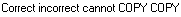

from sikuli import* #--------------------------------------------------------------------------------# def ar_description_shortcuts(): Region(344,262,573,255) #spell check current word paste("correct ") type(Key.F4) wait(.5) assert exists(Pattern().similar(0.94)) wait(.5) #spell check entire field type(Key.ENTER) type(Key.RIGHT) paste("icorrect ") wait(1) type(Key.SHIFT + Key.F4) #wait("Errortypespe-1.png") assert exists() wait(.5) type("c", KeyModifier.ALT) wait() type(Key.ENTER) type(Key.RIGHT) #grammar check entire field wait(.5) paste(" can not ") wait(1) keyDown(Key.SHIFT) type(Key.F5) keyUp(Key.SHIFT) wait() assert exists(Pattern().similar(0.90)) wait(.5) type("c", KeyModifier.ALT) type(Key.ENTER) #spelling and grammar settings keyDown(Key.SHIFT) type(Key.F8) keyUp(Key.SHIFT) wait(, 30) wait(.5) assert exists() type(Key.ENTER) wait(.5) #increase font details section keyDown(Key.CTRL) type('=' + '=' + '=' + '=' + '=' + '=') keyUp(Key.CTRL) assert exists(Pattern().similar(0.94)) wait(1) #decrease font details section keyDown(Key.CTRL) type('-' + '-' + '-' + '-' + '-' + '-') keyUp(Key.CTRL) assert exists(Pattern().similar(0.94)) wait(.5) #shortcut for undo paste("Undo") assert exists(Pattern().similar(0.86)) wait(.5) type("z", KeyModifier.CTRL) assert not exists(Pattern().similar(0.88)) wait(.5) #shortcut for cut paste("CUT") assert exists() doubleClick() type("x", KeyModifier.CTRL) assert not exists(Pattern().similar(0.94)) wait(.5) #shortcut for copy and paste paste("COPY ") assert exists(Pattern().similar(0.89)) wait(.5) doubleClick(Pattern().similar(0.88)) type("c", KeyModifier.CTRL) wait(.5) type(Key.RIGHT) wait(.5) type("v", KeyModifier.CTRL) assert exists(Pattern().similar(0.94)) wait(.5) #shortcut for select all and clear type("a", KeyModifier.CTRL) wait(.5) type(Key.CTRL + Key.DELETE) wait(.5) assert not exists(Pattern().similar(0.94)) wait(.5) #uppercase shortcut paste("correct incorrect cannot") keyDown(Key.SHIFT) keyDown(Key.CTRL) type("u") keyUp(Key.SHIFT) keyUp(Key.CTRL) type(Key.END) assert exists(Pattern().similar(0.94)) #lower case shortcut keyDown(Key.SHIFT) keyDown(Key.CTRL) type("l") keyUp(Key.SHIFT) keyUp(Key.CTRL) type(Key.END) assert exists() wait(.5) #sentence case short keyDown(Key.SHIFT) keyDown(Key.CTRL) type("s") keyUp(Key.SHIFT) keyUp(Key.CTRL) wait(.5) type("n", KeyModifier.ALT) wait(1) type(Key.END) assert exists(Pattern().similar(0.93)) keyDown(Key.SHIFT) keyDown(Key.CTRL) type("s") keyUp(Key.SHIFT) keyUp(Key.CTRL) wait(.5) type("y", KeyModifier.ALT) wait(.5) type(Key.END) assert exists(Pattern().similar(0.94)) wait(.5) #proper case shortcut keyDown(Key.SHIFT) keyDown(Key.CTRL) type("p") keyUp(Key.SHIFT) keyUp(Key.CTRL) wait(.5) type("n", KeyModifier.ALT) wait(.5) type(Key.END) assert exists(Pattern().similar(0.94)) wait(.5) keyDown(Key.SHIFT) keyDown(Key.CTRL) type("p") keyUp(Key.SHIFT) keyUp(Key.CTRL) wait(.5) type("y", KeyModifier.ALT) wait(.5) type(Key.END) assert exists(Pattern().similar(0.94)) #shortcut word count wait(.5) keyDown(Key.SHIFT) keyDown(Key.CTRL) type("w") keyUp(Key.SHIFT) keyUp(Key.CTRL) wait() assert exists(Pattern().similar(0.94)) wait(.5) type(Key.ENTER) type("a", KeyModifier.CTRL) type(Key.DELETE) wait(.5) #shortcut PTI type(Key.SPACE) keyDown(Key.ALT) type(Key.INSERT) keyUp(Key.ALT) wait(1) type(Key.SPACE) keyDown(Key.ALT) type(Key.INSERT) keyUp(Key.ALT) assert exists(Pattern().similar(0.78)) type(Key.BACKSPACE) type(Key.BACKSPACE) assert not exists(Pattern().similar(0.78)) wait(.5) #shortcut abbreviations keyDown(Key.CTRL) type(Key.F7) keyUp(Key.CTRL) assert exists(Pattern().similar(0.94)) wait(.5) type(Key.ESC) wait(.5) #clear out text box\ type("a", KeyModifier.CTRL) type(Key.DELETE) #shortcut formatting paste("BOLD") type("a", KeyModifier.CTRL) wait(.5) type("b", KeyModifier.CTRL) type(Key.RIGHT) assert exists(Pattern().similar(0.94)) wait(.5) type("a", KeyModifier.CTRL) wait(.5) type("b", KeyModifier.CTRL) wait(.5) type("a", KeyModifier.CTRL) type(Key.CTRL + Key.DELETE) wait(.5) paste("ITALIC") type("a", KeyModifier.CTRL) wait(.5) type("i", KeyModifier.CTRL) type(Key.RIGHT) assert exists(Pattern().similar(0.88)) wait(.5) type("a", KeyModifier.CTRL) wait(.5) type("i", KeyModifier.CTRL) type("a", KeyModifier.CTRL) type(Key.CTRL + Key.DELETE) wait(.5) paste("UNDERLINE") type("a", KeyModifier.CTRL) wait(.5) type("u", KeyModifier.CTRL) type(Key.RIGHT) assert exists(Pattern().similar(0.95)) wait(.5) type("a", KeyModifier.CTRL) wait(.5) type("u", KeyModifier.CTRL) type("a", KeyModifier.CTRL) type(Key.CTRL + Key.DELETE) wait(.5) paste("BOLD ITALICS UNDERLINED") wait(.5) type("a", KeyModifier.CTRL) wait(.5) type("b", KeyModifier.CTRL) type("i", KeyModifier.CTRL) type("u", KeyModifier.CTRL) type(Key.RIGHT) wait(.5) assert exists(Pattern().similar(0.94)) wait(.5) type("a", KeyModifier.CTRL) rightClick() click() assert not exists(Pattern().similar(0.94)) wait(.5) type("a", KeyModifier.CTRL) type(Key.DELETE) wait(.5) #shortcut insert date and time keyDown(Key.SHIFT) keyDown(Key.ALT) type("d") keyUp(Key.SHIFT) keyUp(Key.ALT) wait(.5) assert not exists() type("a", KeyModifier.CTRL) type(Key.DELETE) wait(.5) keyDown(Key.SHIFT) keyDown(Key.ALT) type("m") keyUp(Key.SHIFT) keyUp(Key.ALT) wait(.5) assert not exists() type("a", KeyModifier.CTRL) type(Key.DELETE) wait(.5) type("sikuli test description and sta ") wait(1) paste("Sikuli prompt 1") type(Key.TAB) type(Key.ENTER) wait(1) paste("Sikuli prompt 2") type(Key.TAB) type(Key.ENTER) wait(1) paste("Sikuli prompt 3") type(Key.TAB) type(Key.ENTER) wait(.5) assert exists(Pattern().similar(0.87)) wait(.5) type("a", KeyModifier.CTRL) type(Key.DELETE) wait(.5) paste("This Description shortcut Test has Completed Successfully") assert exists(Pattern().similar(0.92)) #ar_entry_description_shortcuts()